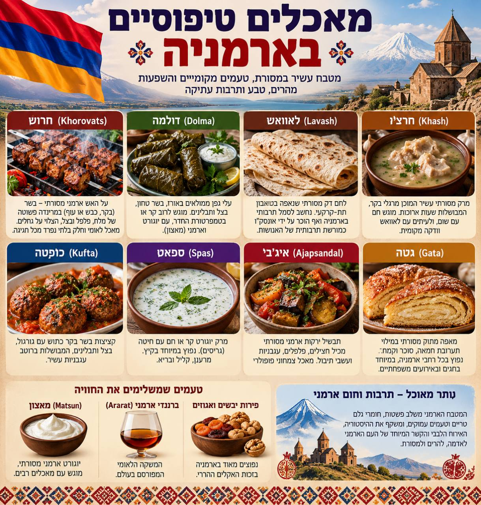

הקצב
יומיים ב־Yerevan, שלושה ימי טבע ומנזרים, ואז חזרה לבירה דרך ארץ היין.
YerevanDilijanYeghegnadzorGorisYerevan
8 ימים · 2 מטיילים · סתיו 2026
מ־Yerevan אל ההרים, המנזרים והקניונים — מסלול אחד שמרכז את כל מה שצריך בדרך.
תמונת המסע
יומיים ב־Yerevan, שלושה ימי טבע ומנזרים, ואז חזרה לבירה דרך ארץ היין.
כל שבעת הלילות מאושרים, עם ביטול חינם לפי צילום ההזמנות.
יש להשלים פרטי טיסות, רכב, ביטוח וכניסה לאטרקציות מבוקשות.
לרשימת ההכנות ←מה כדאי לטעום
מדריך חזותי למנות, ללחמים ולטעמים המקומיים שכדאי לחפש לאורך הדרך.

יום אחר יום
לחצו על יום כדי לפתוח את כל התחנות. קישורי הניווט פותחים חיפוש ישירות במפות.
כל הלילות במקום אחד
המחירים והסטטוס הועתקו מצילומי Booking שסופקו. פרטי אישור וקודי PIN אינם נשמרים באתר.
חזרה לראש האתרהלוך · יום ג׳, 6.10
Tel Aviv–Larnaca 06:30–07:40 · Larnaca–Yerevan 11:00–13:50
חזור · יום ג׳, 13.10
3F 871 · Yerevan–Larnaca 09:10–10:00 · Larnaca–Tel Aviv 15:20–16:25
לפני שיוצאים